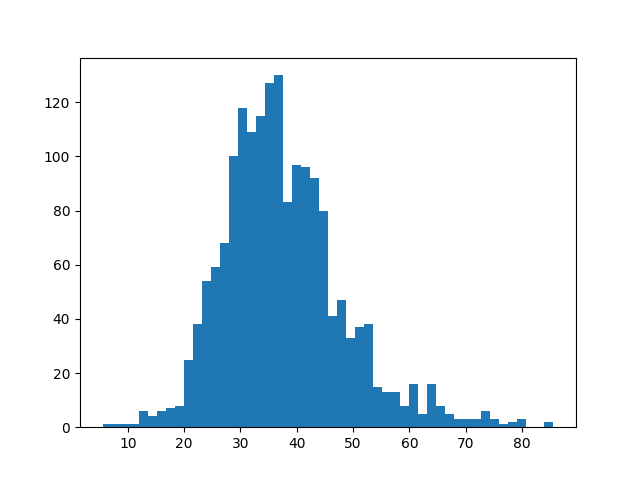

DESCRIPTION
v.histogram draws a histogram of the values in a vector map attribute
column. Users can use the where option to only select a subset of the
attribute table and can determine the number of bins (bars) used for the
histogram. The plot_output parameter determines whether the result is
displayed on screen (default) or exported to a graphics file.
Options to customize the appearance of the plot include, among others,
rotating the plot and x-axis labels, setting font size, and defining the colors
of various plot components. The **style** option applies a Matplotlib [style
sheet](https://matplotlib.org/stable/gallery/style_sheets/style_sheets_reference.html)
to the plot, e.g. *style=ggplot*.
NOTE
This is a quick and dirty solution using basic matplotlib. In future, this
should be integrated into the g.gui, possibly together with the raster histogram
tool.
EXAMPLE
Show the histogram of median age values in the census block map:
v.histogram map=censusblk_swwake column=MEDIAN_AGE where="TOTAL_POP>0"

Histogram of median age values in census blocks
AUTHOR
Moritz Lennert (original script)
Paulo van Breugel (added style sheet, plot and histogram format options)